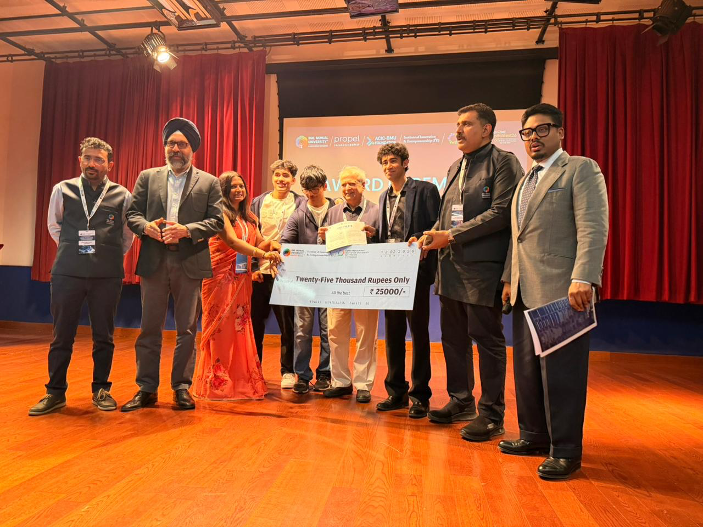
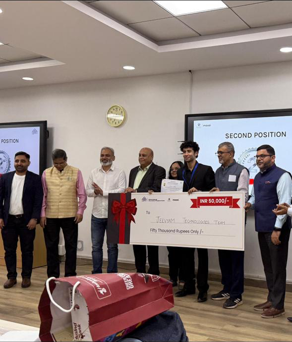
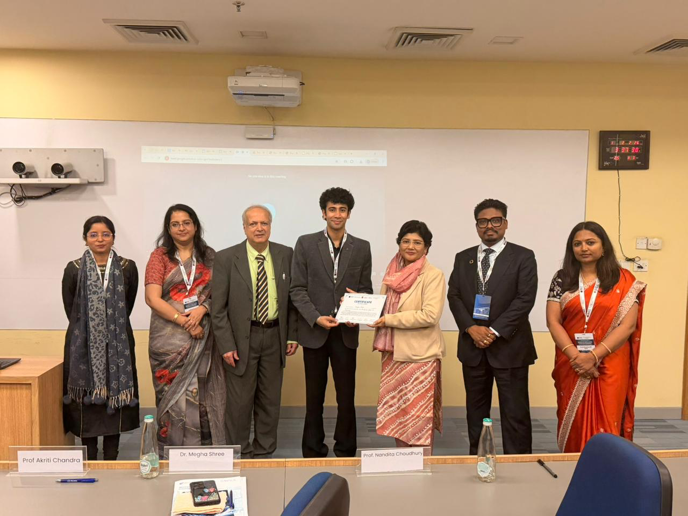
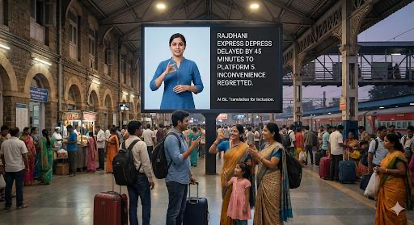
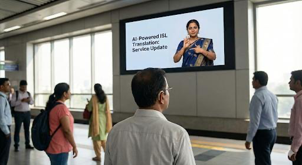
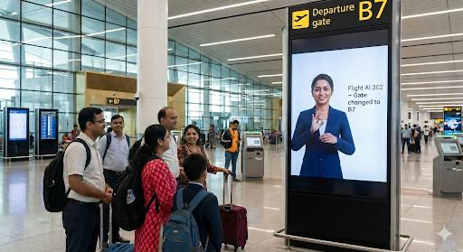
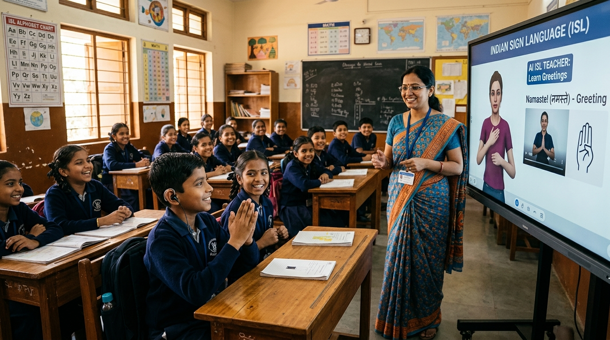
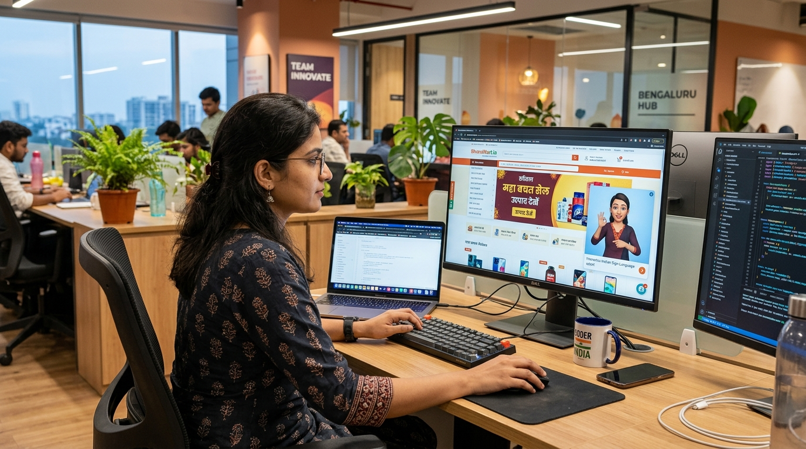

Everyone Deserves to Be Heard
Expert-guided Indian Sign Language education and real-time AI translation for citizens recovering independence: from wound care & hospital clinics to classrooms, public transit, and home learning modules.
Recognized by India's Leading Institutions
National awards, ideathon victories, and academic commendations validating SignISL's breakthrough assistive AI.

1st Prize Winner · Innovation & Social Impact
Awarded First Place at the ACIC-BMU Foundation and Institute of Innovation & Entrepreneurship pitch competition. Honoured by a distinguished jury of venture technologists and educators for delivering reliable, real-time Indian Sign Language synthesis.
- Selected as champion among North India's top university technology teams
- Demonstrated real-time neural gesture accuracy, child safety, and zero cloud delay
- Backed by ACIC-BMU incubation resources and direct ecosystem mentorship

2nd Place Nationwide at IIM Mumbai
Secured 2nd Place nationwide in an intensive evaluation against over 200 leading engineering and social enterprise teams from all across India. Commended by academic deans and enterprise leaders for solving critical public accessibility challenges.
- Live sub-200ms speech-to-ISL latency verified on stage during final pitch
- Engineered to meet statutory compliance under the RPWD Act 2016
- Achieved top national benchmark score in societal impact and feasibility

Certificate of Academic Excellence
Officially presented with a Certificate of Excellence by Prof. Nandita Choudhury, Dr. Megha Shree, and Prof. Akriti Chandra for original engineering research and assistive application in Indian Sign Language translation.
- Comprehensive academic validation against standard Indian Sign Language corpora
- High-precision temporal smoothing algorithm preventing gesture flicker
- Recognized for adherence to WCAG 2.2 AA and strict user privacy safeguards
AI-Powered Indian Sign Language Generator
Experience our real-time text and speech-to-sign avatar in action below. Type any word or sentence, or use your microphone to watch instant 3D sign translation directly on our platform.
Field Sessions with the Deaf Community
Hands-on co-design and live validation sessions with deaf students, educators, and community advocates — refining real-time gesture comprehension and cultural authenticity.
See SignISL in Real Time
Uncut footage demonstrating our AI avatar translating speech and text with sub-200ms latency on production devices.
Making Public Infrastructure Accessible
From railway platforms to airport gates, SignISL bridges communication gaps for deaf commuters across India.

Indian RailwaysRailway Platform Displays
Real-time train departure delays and platform change announcements rendered in clear Indian Sign Language.

Metro TransitMetro Station Concourse Screens
Instant visual translation for transit route adjustments, emergency alerts, and gate directions.

Indian AirportsAirport Departure Gates
Gate changes, boarding calls, and security notifications translated immediately for every deaf passenger.
Compliant with the RPWD Act 2016
SignISL helps ministries, municipal departments, and public services fulfill their statutory obligations under India's Rights of Persons with Disabilities Act 2016, ensuring equal digital access for 68 million deaf citizens.
Statutory Mandate
Directly satisfies government guidelines for accessible communications in public offices, education, and digital portals.
Citizen Service Kiosks
Ready for rapid deployment at Aadhaar enrollment counters, passport seva kendras, and municipal helpdesks.
Sovereign & Secure
All data processing complies with Indian data sovereignty principles. Zero retention of private voice or personal identifiers.
What We Do: AI Features Built for India
Sub-200ms real-time neural translation bridging voice, text, and Indian Sign Language across 12+ regional dialects.
 Live Ready
Live Ready
Text to Indian Sign Language
Type any sentence in English or Hindi and watch our 3D avatar translate it into fluid, grammatical Indian Sign Language instantly.
Try Text to ISL Converter → <200ms Latency
<200ms Latency
Speech to Indian Sign Language
Speak naturally in 12+ Indian languages. Continuous audio streaming converts speech directly into expressive signing with zero delay.
Explore Speech to ISL → Real-Time Captions
Real-Time Captions
Live Transcription
Bilingual audio transcription paired with sign synthesis. Gives deaf students and attendees a complete, accessible, searchable record.
See Live Transcription → 12+ Languages
12+ Languages
Live Translation
End-to-end multi-language voice and sign translation for broadcasts, government summits, and live events across diverse Indian communities.
Experience Live Translation →Engineered for Every Setting
Dedicated modes customized for unique communication environments across India.

Schools & Classrooms
Live translation of lectures so deaf students see their teacher's words signed instantly in real time.
Explore Classroom Mode →
Hospitals & Clinics
Allows deaf patients to explain medical symptoms and understand physician diagnoses independently.
Explore Healthcare Mode →
Government Kiosks
Equips civic service centers with digital ISL interpreters for citizen welfare and identity paperwork.
Explore Civic Mode →
Home & Family
Parents and siblings learn Indian Sign Language naturally alongside their child with family learning modes.
Explore Family Mode →
Public Conferences
Live projected ISL avatar overlay for auditoriums, government summits, and televised broadcasts.
Explore Events Mode →
Website Widget
One-line drop-in code snippet that makes any website fully accessible in Indian Sign Language.
Explore Widget Integration →Voices That Guide Our Mission
"SignISL transformed how I communicate with my daughter. For the first time in our lives, she could understand every thought I wished to share with complete clarity."
"My deaf students are finally deeply engaged in every lecture. SignISL represents the assistive classroom technology I have awaited for over a decade."
"The sub-200ms real-time translation is extraordinary. We integrated it onto clinic intake displays with zero disruption and immense patient gratitude."
Everyone Deserves to Be Seen and Heard
Partner with SignISL to bring real-time Indian Sign Language accessibility to your institution, school, or organization.